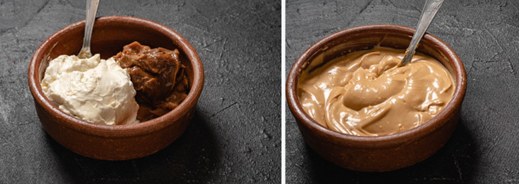

Esta es la receta de la mejor chocotorta
Ingredientes
- 2 paquetes de galletas de chocolate (Chocolinas o similares)
- 600 g. de queso crema (Mendicrim o similar)
- 600 g. de dulce de leche
- 200 ml. de café
- 100 g. de chocolate para decorar
- 100 g. de crema de leche
Paso a paso
- Mezclamos en un bol el queso y el dulce de leche hasta conseguir una crema homogénea. Tapar y poner en la heladera.
- Mojar galletitas de a una en café tibio y colocar lado a lado en un molde rectangular o cuadrado.
- Luego de completar una capa de galletitas, untar una capa con parte de la mezcla de queso y dulce de leche.
- Agregar una nueva capa de galletitas mojadas en café y luego volver a cubrir con mezcla de queso y dulce de leche hasta agotar galletitas y mezcla.
- Para decorar, agregar una capa de crema de leche batida y adornar con virutas de chocolate o espolvorear cacao.
- Llevar a heladera la mayor cantidad de horas antes de consumir. Idealmente, de un día para otro.



Para tener en cuenta
- Al café puede agregarse un poco de bebida alcohólica como whisky para cortar el dulzor.
- En lugar de café puede usarse leche chocolatada.
- En la mezcla del relleno, en lugar de queso puede usarse crema. Resultará un relleno más ligero pero quizás demasiado dulce.
- De cuánto remojen las galletitas dependerá la consistencia de la torta. Más mojadas, más tierna. Menos mojadas, más seca resultará.